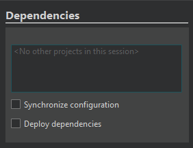

Specify dependencies
If you have multiple projects loaded in a session, you can define the order in which they are built. For example, if project A depends on project B, project B must be built first.
Note: The build order is stored as a property of a session, not a project. You must open the session for these settings to take effect.

To define the build order of projects within a session:
- Go to Projects > Project Settings > Dependencies.
- Select projects that must be built before the current project is built.
- Select Synchronize configuration to use the same kit as well as the same build and deploy configuration to build and deploy all dependent projects loaded in a session.
- Select Deploy dependencies to deploy the built dependent projects.
Qt Creator calculates the build order based on the dependencies that you specify for the projects loaded in the session.
Note: You cannot use this view to specify subprojects for projects.
See also Add subprojects to projects and Manage sessions.